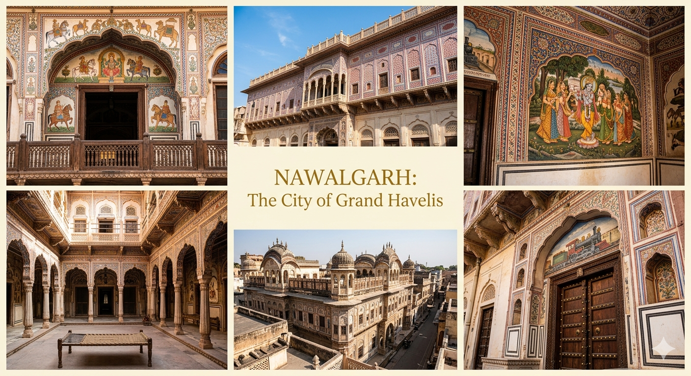

Nawalgarh – The City of Grand Havelis
Introduction
Nawalgarh is a historic town located in the Shekhawati region of Rajasthan, India. It is popularly known as the "Golden City of Magnificent Havelis" due to its grand mansions adorned with beautiful fresco paintings and architectural brilliance.
History
Nawalgarh was founded in 1737 by Thakur Nawal Singh, a ruler of the Shekhawati region. The town became an important center for trade and commerce. Wealthy merchants built luxurious havelis decorated with intricate artwork that reflected their prosperity and cultural taste.

Famous Attractions
1. Nawalgarh Fort (Bala Kila Fort)
Built by Thakur Nawal Singh, the fort is a major attraction of the town. It showcases traditional Rajput architecture and offers a glimpse into the royal past of the region.
2. Podar Haveli
Podar Haveli has been converted into a museum that displays Shekhawati art, culture, and history. It contains beautifully restored fresco paintings.
3. Aath Haveli Complex
This complex consists of eight interconnected havelis built by a wealthy family. It is known for its detailed carvings and stunning wall paintings.
4. Morarka Haveli
Morarka Haveli is famous for its well-preserved frescoes that depict mythological scenes and everyday life in earlier times.
Architecture and Frescoes
The havelis of Nawalgarh are decorated with fresco paintings that include themes from Indian mythology, royal life, and even European influences. These artworks make the town a visual delight for visitors.
Culture and Traditions
Nawalgarh reflects the vibrant culture of Rajasthan through its festivals, traditional music, folk dances, and handicrafts. The local people maintain their cultural heritage with great pride.

Best Time to Visit
The ideal time to visit Nawalgarh is between October and March when the weather is cool and comfortable for sightseeing.
How to Reach
Nawalgarh is well connected by road. The nearest airport is Jaipur, about 150 km away. The nearest railway station is Nawalgarh itself, which connects it to major cities.
Why It Is Called the Golden City
Nawalgarh is known as the "Golden City of Magnificent Havelis" because of its rich collection of grand mansions that shine with artistic beauty and historical importance. The golden charm comes from the intricate frescoes and architectural elegance.
Conclusion
Nawalgarh is a perfect destination for those interested in art, architecture, and history. Its magnificent havelis and cultural richness make it one of the most fascinating towns in Rajasthan.